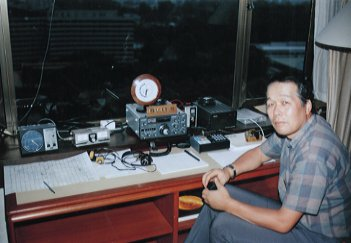

|
【シンガポールから6mの電波伝搬実験】
1989年11月12日から20日にかけて､シンガポールの9V1ESから6mの運用が行われました。
この6m運用は、1988年6月に「電波伝搬実験」として初めてシンガポールのアマチュア無線連盟とJA1UT(林)ら、
日本からの協力グループが共同で運用したのに続くものです。
この最初の運用時にはコンディションに恵まれずQSO数も伸びなかったため、
多くの局からの再運用の希望に答えて行われたものです。
また前回の6m初運用の時に、この局と初QSOしたのが私(JA1RJU)だったために、
今回は"罪滅ぼし？"の意味も含めて運用側に回ることになりました。

ホテルから9V1ESを運用するJA1RJU
前回同様、シンガポールのアマチュア無線連盟の協力を得て行われ、特別局のコールサインも前回と同じ9V1ESを使用する事になりました。
使用する6mのRig(FT-625D)、アンテナ(クリエート・CL-6DX）も前回使用したものを持参したため、
テレコム(日本の電波管理局相当)の開局検査も簡単なチェックだけで許可されました。
今回は11月17日から、当地シンガポールで開催される「SEANET CONVENTION」の特別局、9V0SEAもホテルの同じ部屋に設置され、
この検査も合わせて行われました。
今回の電波伝ぱん実験の協力局として、日本から全運用期間中の前半(11月12日～15日)はJA1RJU（小笠原）、
JA1TRC（岡）の2局が担当。
後半(11月16日～)はJA1UT(林)局らが引き続きSEANET CONVENTION終了まで運用する事になった。

【運用開始】
先発のJA1RJU、JA1TRCの2人は11月12日の早朝にシンガポールに到着、その日の午前中にホテルの屋上にアンテナ建設という強行軍でした。
地元の9V1UV(Silver)らアンテナ建設スタッフや、シンガポール在住の日本人、9M1WO(赤口さん)らの協力を得て、
午後2時過ぎにローテーター付きの6m用の6エレが14階のホテルの屋上に上げられました。
季節は冬でもシンガポールは赤道直下の国。炎天下の屋上でのアンテナ建ては最もツライ仕事でした。
ちょっとスパナなどを放置して置くだけで触れられないほどに熱くなってしまうのです。
6mのJAとのオープニングは幸運にも初日からありました。
私たちの滞在していた前半だけでJA局363 QSOに成功しました。
コンベンション終了までの全期間の合計は767 QSOでした。
この時期はコンデションの上昇期でJA以外のカントリーとのQSOも期待していたのですが、
予想に反し、VK6(西オーストラリア)が5局だけという結果に終わりました。
残念だったのは13日の朝に1局聞こえた北米のN7MLがJAのパイルアップに阻まれQSO出来なかった事でした。
【JA1RJU・小笠原 一夫 】
【写真・地元の新聞でも紹介された9V1ESの運用】
|